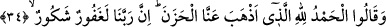

argacı ibrişim olan elbise” demektir. Libas, elbise ve kıyâfet gibi giyilen şeyin adıdır.
İpek elbise giymek erkelere haram; kadınlara helaldir. Erkekler yalnız harpte ipek
giyebilirler. Düşman korkusu, yahut bedeninde bir kaşıntı ve uyuz gibi bir sağlık
zorunluluğu olursa, yahut bit pire gibi haşerâtı def ve bertaraf etmek için giyebilir. Yine
bedenine temas etmese dahi erkekler ipek giyemez. Sahih olan budur. Elbisedeki işâret
gibi bağ ve püskülün ipek olması câizdir. Gözünde hastalık/iltihap bulunan kişi, kara
bakmak durumunda olan kimse gözüne siyah ipekten bir örtü ve peçe takabilir. Kişi ipek
fes ve takke giyebilir. İpekte ruhsat tabi haliyle yahut kapalı olarak dört parmaktır.
Elbisenin değişik yerlerinde az miktarda bulunan ipek toplamda dört parmak miktarını
geçse de bu toplama göre işlem yapılmaz.
İmam-ı Azam’a göre kişi ipekten yastık, minder ve kırlent yapılabilir. İmameyn’e
göre bu mekruhtur. Fukaha’nın çoğu bu ikinci görüşü almışlardır. Duvarlara ve kapılara
ipek asmanın hükmü de bu ihtilaf üzeredir. İpek halı, kilim ve benzeri yaygıların üzerine
oturmakta bir sakınca yoktur. Yine ipek seccâdede namaz kılınabilir. Çocuğun beşiği ve
karyolası üzerine ipek örtü/çarşaf konulabilir. Kişi harpte ve diğer zamanlarda ittifakla
kerâhet olmaksızın çözgüsü ibrişim, argacı başka olan elbiseyi giyebilir. Bu argaç
ipekten az olsun çok olsun yahut eşit olsun farketmez. Sahih olan budur. Bunun aksi
olarak argacı ibrişim, çözgüsü başka olan elbiseyi ise yalnız harpte giyebilir. Erkek
çocuğa altın ve ipek giydirmek mekruhtur. Çocuk buna alışmamalıdır. Günahı giydirene
âiddir. Zira yapılan iş ona nispet edilir. Aynı şekilde sünnete muhâlif olan her elbise de
mekruhtur. Elbisenin pamuk, keten yahut yünden olması müstehaptır. Renklerde en
sevimli olanı beyazdır. Yeşil elbise giymek sünnettir. Siyah elbise giymek müstehaptır.
Kırmızı elbise giymekte bir sakınca yoktur. Zâhidî’de böyledir. Bu mâlûmatın hepsi
Kuhistânî’den alınmıştır. Hacc suresinde ve diğer yerlerde bu konuyla ilgili mâlûmat
geçmiştir.
34. (Cennette şöyle) derler: Bizden tasayı gideren Allah’a hamdolsun. Doğrusu
Rabbimiz çok bağışlayan, çok nimet verendir.
Cennete girdikleri zaman Allah’ın onlara olan lütuf ve ihsanına karşı Rablerine hamd
ederek “(Cennette şöyle) derler:” Cennete girmekle “Bizden tasayı gideren Allah’a
hamdolsun.”
Bu topluluk cehennem çukurundan kurtulup cennet bahçesine ulaşınca “elhamdülillâh”
derler. Yâni bütün kemal sıfatlar tam kudret sahibi olan Zât’a âiddir. “Hazen” ve
“hüzün” kelimeleri, yerin sert olması, gam ve tasadan dolayı gönülde hâsıl olan üzüntü,
gerginlik, stres ve sıkıntıdır. Zıddı ferah ve sevinmedir. et-Te’vîlâtü’n-Necmiyye’de der
ki: “Vakit, sahibine gam, keder ve tasa olduğu için üzüntüye “hüzün” denilmiştir. Cennet